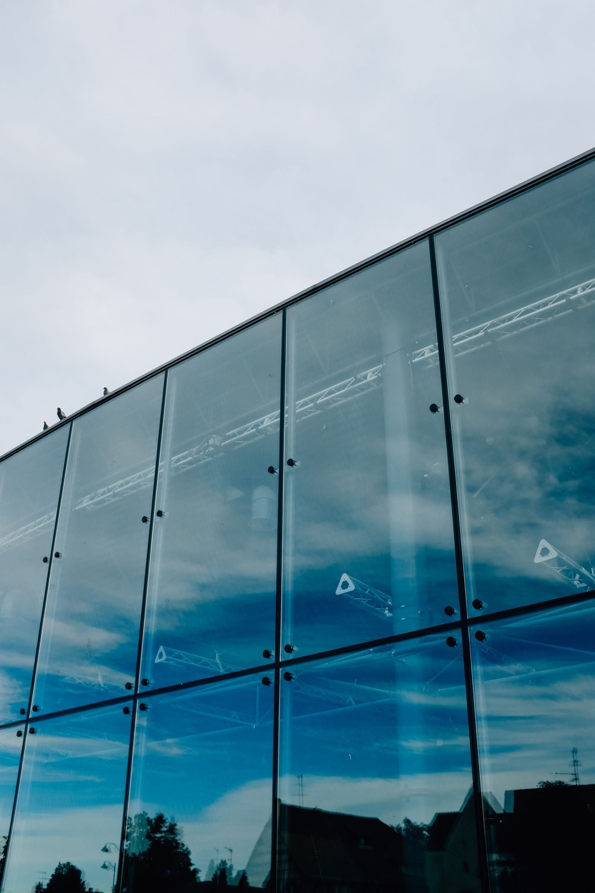
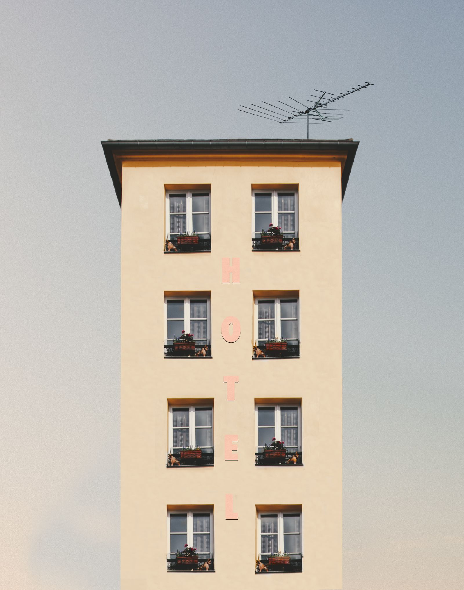

25 anos
de trajetória.
Uma trajetória dedicada a fachadas, revestimentos e soluções em engenharia.


Há 25 anos, soluções em fachadas, revestimentos e engenharia para projetos de todos os portes.
Falar sobre meu projetoCada projeto tem sua identidade.
A Santoris ajuda a dar forma à sua.
Uma trajetória dedicada a fachadas, revestimentos e soluções em engenharia.
Engenharia e projeto na mesma conversa.
Atendimento nacional.
Conte onde você quer construir.
Há 25 anos, a Santoris atua em fachadas e revestimentos, com soluções em engenharia para projetos de diferentes portes.
Apresente o contexto da obra e converse sobre as possibilidades para o seu projeto.
Começar uma conversa ↗Fachadas, revestimentos e engenharia para conversar sobre o que a sua obra precisa.
Converse sobre a fachada da sua obra, suas características e o resultado que deseja alcançar.
Apresente as superfícies e o contexto do projeto para consultar as soluções disponíveis.
Apresente a necessidade técnica da sua obra para conversar sobre as possibilidades de apoio.
Projetos de diferentes escalas começam com o entendimento da demanda e do local da obra.
Experiência para olhar
o projeto como um todo.
25 anosde trajetória
Brasilatendimento nacional
Seu portesua necessidade
Uma seleção ilustrativa de arquitetura para conversar sobre linhas, superfícies e composição.
Fachadas
Uma referência de como as linhas e os reflexos participam da leitura de um edifício.
Fotografia ilustrativa · Adrien Olichon
Revestimentos
Superfícies e encontros que ajudam a compor a identidade visual da arquitetura.
Fotografia ilustrativa · wal_ 172619
Detalhes
Aberturas, repetições e proporções observadas de perto para inspirar a conversa.
Fotografia ilustrativa · Jeffrey Czum
Imagens de banco utilizadas como referências de arquitetura.
3 referências exibidas.
Do primeiro contato à definição do escopo, uma conversa para apresentar o que o seu projeto precisa.
Informe a cidade, o tipo de obra e o que você busca para a fachada ou o revestimento.
Converse sobre as informações do projeto e os serviços que precisam ser avaliados.
Consulte diretamente as condições, disponibilidade e próximos passos para a sua obra.
A Santoris tem atendimento nacional. Conte a cidade e o estado da obra para consultar as condições de atendimento ao projeto.
Fachadas, revestimentos e soluções em engenharia. Apresente a sua necessidade para avaliar diretamente com a Santoris o escopo disponível.
Apresente a etapa em que sua obra está. A Santoris poderá orientar quais informações serão necessárias para conversar sobre o atendimento.
Valores, prazos, materiais e condições dependem do escopo. Essas informações são alinhadas diretamente com a Santoris após a apresentação da demanda.
As imagens desta página são referências ilustrativas de arquitetura, provenientes de banco de imagens. Para conhecer obras realizadas e referências próprias, converse com a Santoris.
A Santoris atende projetos em todo o Brasil. O mapa representa a área geral de atendimento; consulte a disponibilidade para a cidade da sua obra.
Abrir área no Google Maps ↗